|
4-1-4-1
|
Uruguay | 2 | - | 2 | Cabo Verde |
4-1-4-1
|
| HT 2-1 | ||||||
|
FIFA World CupMonday 22 June 2026
|
||||||
- Venue
- Miami Stadium
- Attendance
- 64,003
- Referee
- Espen Eskås
Yellow card20'
R. Bentancur
Goal44'
M. Araújo
Goal45+6'
A. Canobbio
Assist: M. Araújo
Yellow card58'
M. Olivera
- 2
Substitution70'
F. Viñas
D. Núñez
M. Ugarte
N. de la Cruz
Substitution81'
M. Araújo
B. Rodríguez
Whistle45+9'
45+9'
Yellow card5'
Sidny Cabral
Goal21'
Kevin Pina
Substitution46'
Telmo Arcanjo
Deroy Duarte
- 2
Substitution58'
Gilson Benchimol
Nuno da Costa
Garry Rodrigues
Hélio Varela
Goal61'
Hélio Varela
Substitution71'
Kevin Pina
Laros Duarte
Substitution80'
Jamiro Monteiro
Yannick Semedo
Yellow card90+3'
Diney Borges
Uruguay | |
|---|---|
Goalkeeper | |
| 23 | F. Muslera |
Defender | |
| 3 | S. Cáceres |
| 13 | G. Varela |
| 16 | M. Olivera 58' |
| 25 | J. Sanabria |
Midfielder | |
| 5 | M. Ugarte 70' |
| 6 | R. Bentancur 20' |
| 8 | F. Valverde |
| 14 | A. Canobbio 45+6' |
| 20 | M. Araújo 44'81' |
Forward | |
| 21 | F. Viñas 70' |
Substitutes | |
| 7 | N. de la Cruz 70' |
| 9 | D. Núñez 70' |
| 18 | B. Rodríguez 81' |
Cabo Verde | |
Goalkeeper | |
| 1 | Vozinha |
Defender | |
| 3 | Diney Borges 90+3' |
| 4 | Pico Lopes |
| 13 | Sidny Cabral 5' |
| 22 | Steven Moreira |
Midfielder | |
| 6 | Kevin Pina 21'71' |
| 10 | Jamiro Monteiro 80' |
| 11 | Garry Rodrigues 58' |
| 18 | Telmo Arcanjo 46' |
| 20 | Ryan Mendes |
Forward | |
| 9 | Gilson Benchimol 58' |
Substitutes | |
| 14 | Deroy Duarte 46' |
| 15 | Laros Duarte 71' |
| 16 | Yannick Semedo 80' |
| 21 | Nuno da Costa 58' |
| 26 | Hélio Varela 58'61' |


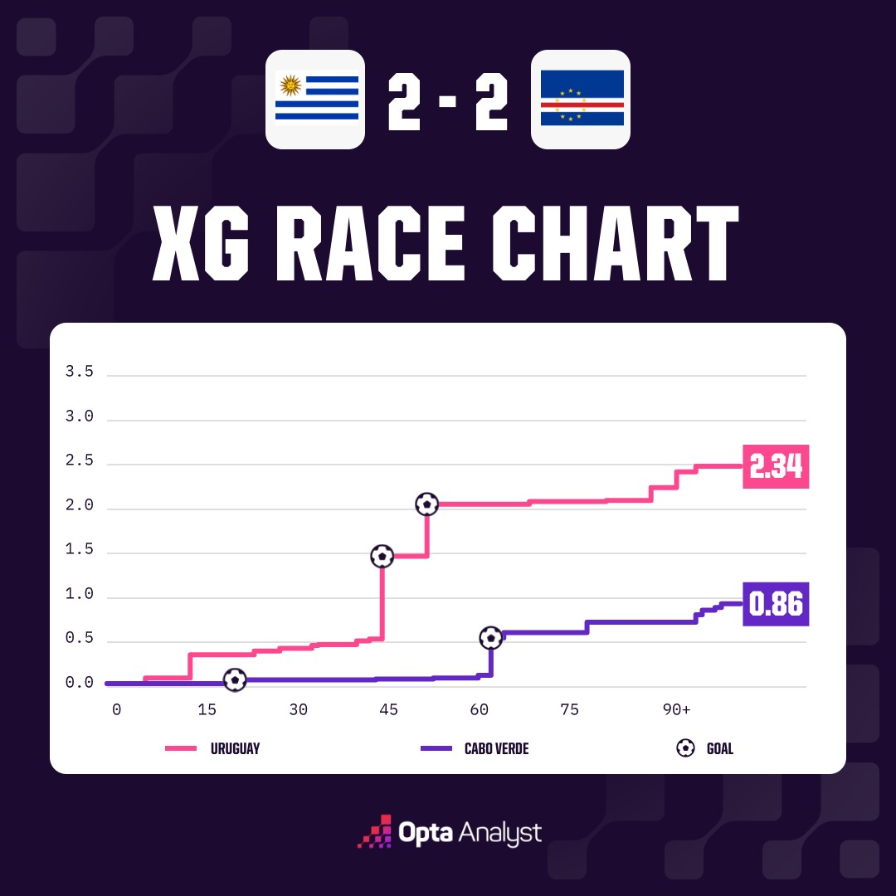
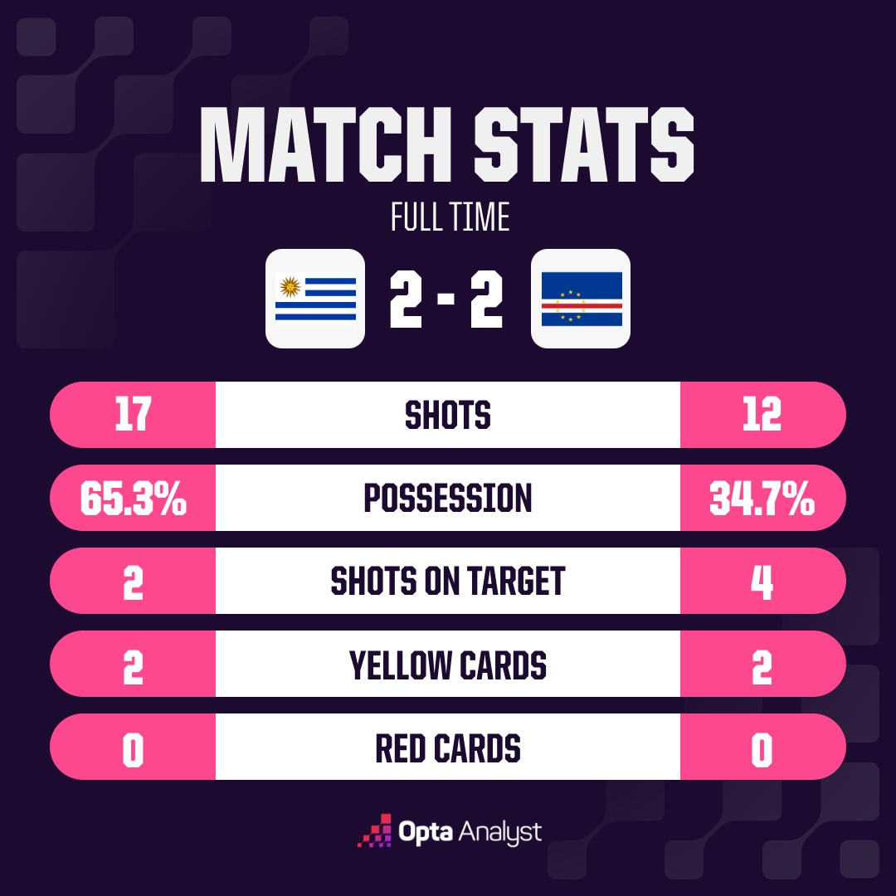
100'
Uruguay are undefeated in their last 3 games in the FIFA World Cup, their last longer unbeaten streak was from 15th June 2018 to 30th June 2018, a run of 4 games.
100'
Uruguay attempted 17 shots in this game, their lowest total in a single match in the 2026 FIFA World Cup.
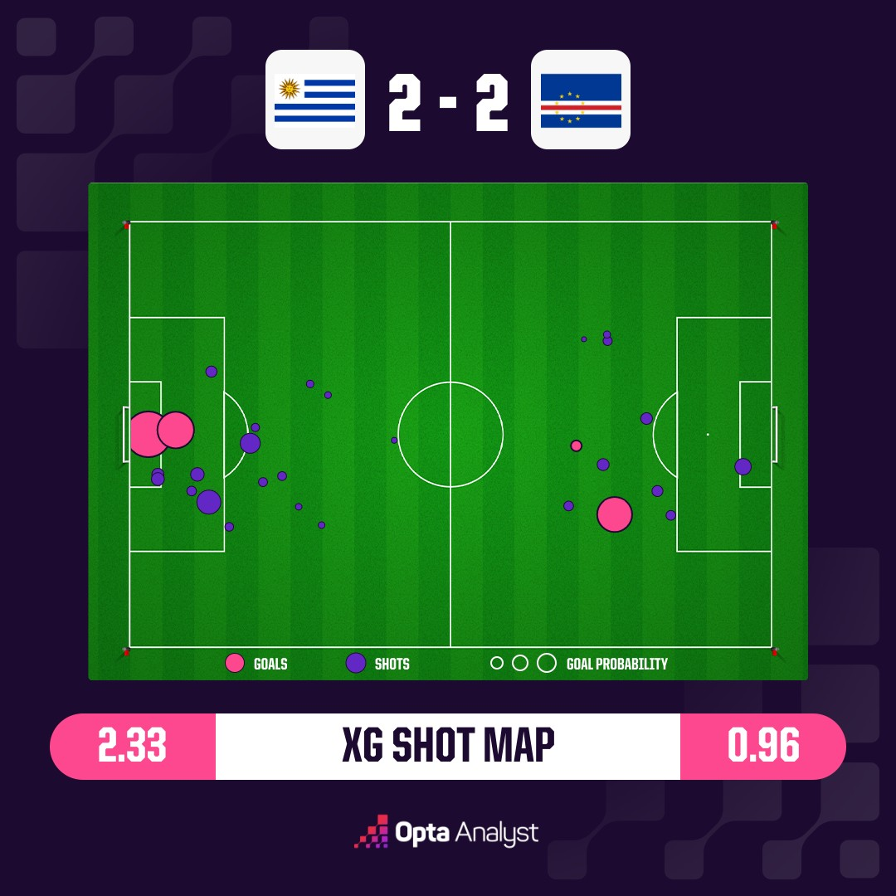
90+9'
That's it! The referee blows the whistle and we have reached full-time. The final score at Miami Stadium is Uruguay 2-2 Cabo Verde.
90+9'
Can Cabo Verde make this chance count? They have won a free-kick in a threatening position after a foul from Sebastián Cáceres on Nuno da Costa. Will Uruguay's defence be tested here?
90+7'
Fernando Muslera is called into action to keep out a shot from outside the box by Laros Duarte. The effort from the Cabo Verde player was on target, but Uruguay shot-stopper got to it.
90+7'
Good play from Laros Duarte, who draws a foul from Rodrigo Bentancur to hand Cabo Verde a free-kick in a dangerous position. Will they create something from this set-piece?
90+6'
BLOCK! An intervention from Mathías Olivera might have just prevented a goal, with the defending player getting in the way of an attempt from Ryan Mendes. Solid defending there!
90+4'
That was hopeful! A bit of a punt from Laros Duarte, who goes for goal from distance, but Fernando Muslera makes the save.
90+4'
A rash challenge from Agustín Canobbio, who sends Yannick Semedo tumbling, giving Cabo Verde a free-kick. It is not in a threatening position, but it gives them a chance to get back on the ball.
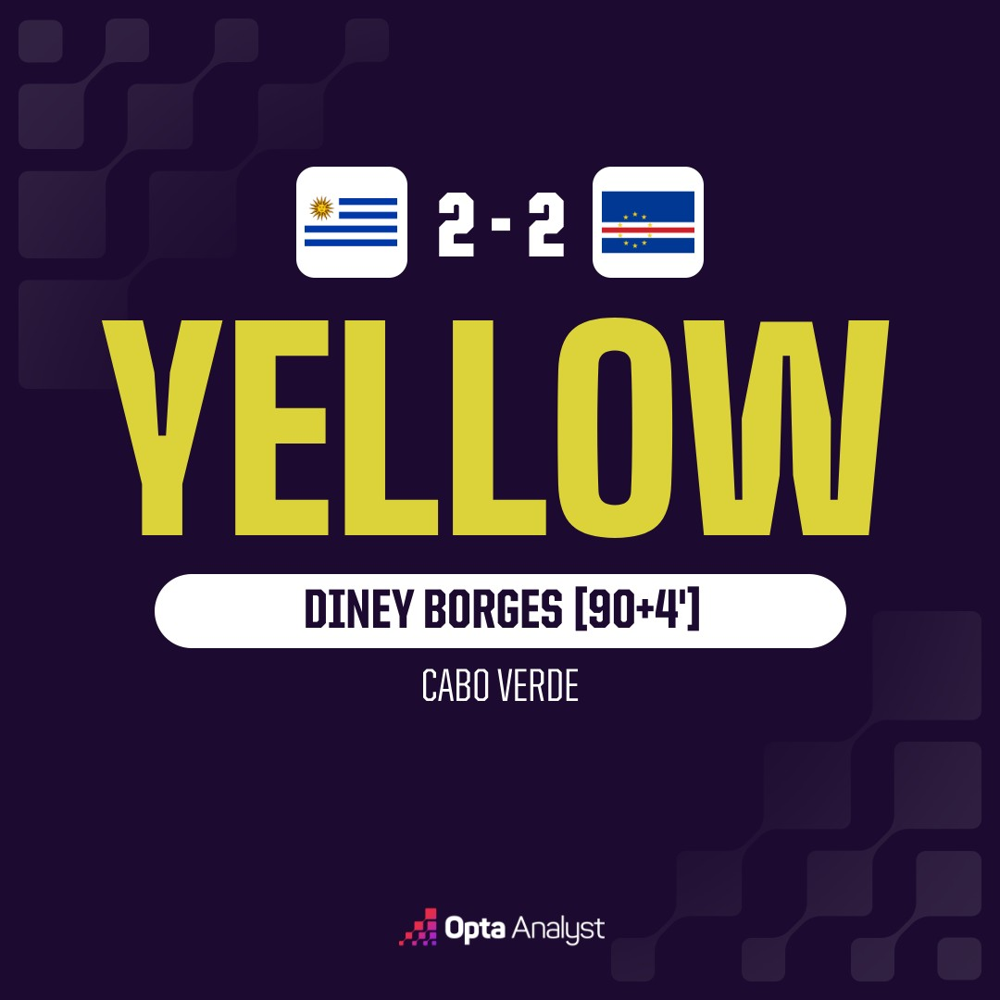
90+3'
OVERTURNED! VAR has decided to intervene here, and after that comprehensive check, the referee’s decision has been overturned.
90+3'
VAR! The technology is now intervening – will the referee’s decision be overturned, or will it stand? Let’s wait and see.
90+3'
BOOKING! Yellow card for Diney Borges, who is penalised for a foul. The referee waves away their remonstrations, and now they will have to be careful.
90+3'
MISS! The score remains 2-2, with Cabo Verde relieved after Uruguay’s Agustín Canobbio goes for goal but sends their attempt off target. Not one to write home about, that one.
90+3'
Great block from Mathías Olivera, as they get in the way of an attempt from Ryan Mendes that might have been set to cause the goalkeeper some problems. Solid defending from the Uruguay player.
90+3'
BLOCKED! That was close. Sidny Cabral got off a shot, which was heading in, but Sebastián Cáceres was on hand to make a vital intervention. Great block!
90+2'
Uruguay have had plenty of the ball in the last 15 minutes, with 68.50% possession compared to just 31.50% for their opponents. However, there’s not been any goal to come from that possessional dominance just yet.
90+1'
MISS! A shot from Federico Valverde ends up being off target. They might have done a bit better with that one, but it remains Uruguay 2-2 Cabo Verde.
89'
This could be a chance for Uruguay, after Yannick Semedo fouls Nicolás de la Cruz, handing them a free-kick in a threatening area. A good set-piece from here could really test the Cabo Verde defense!
86'
Can Cabo Verde survive here? They will have some defending to do after the ball is turned behind for a corner kick. Will Uruguay take this opportunity and grab the goal they have been pushing for?
86'
The pressure is starting to build. Uruguay with a cluster of set-pieces as they look to make it count.
86'
Uruguay win a corner after Rodrigo Bentancur sees a shot diverted wide by Steven Moreira. Can Uruguay make this opportunity count, or will Cabo Verde defend this?
86'
CORNER! The pressure is building for Uruguay as they win a set-piece after Brian Rodríguez's attempt is blocked by Steven Moreira and diverted out of play.
85'
Can Cabo Verde survive here? They will have some defending to do after the ball is turned behind for a corner kick. Will Uruguay take this opportunity and grab the goal they have been pushing for?
81'
Substitution! Brian Rodríguez replaces Maxi Araújo for Uruguay as the manager shuffles the pack. Can Brian Rodríguez make an impression as this match continues?
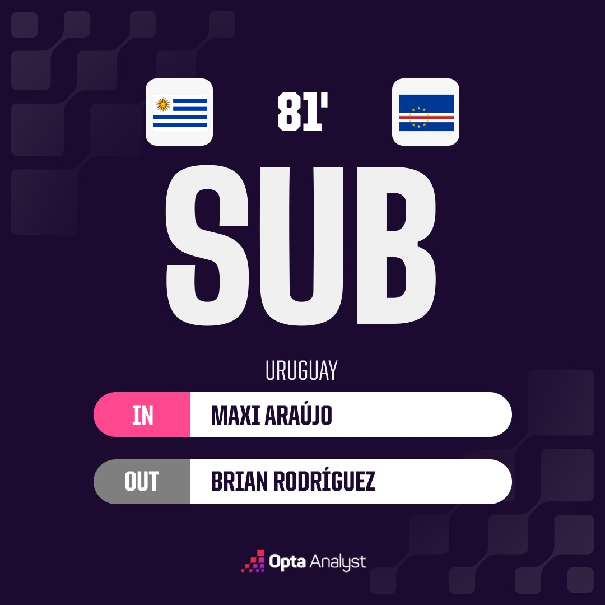
80'
An enforced substitution for Cabo Verde, as Jamiro Monteiro cannot carry on after sustaining an injury. Yannick Semedo has hastily warmed up and now made their way onto the pitch in Jamiro Monteiro's place.
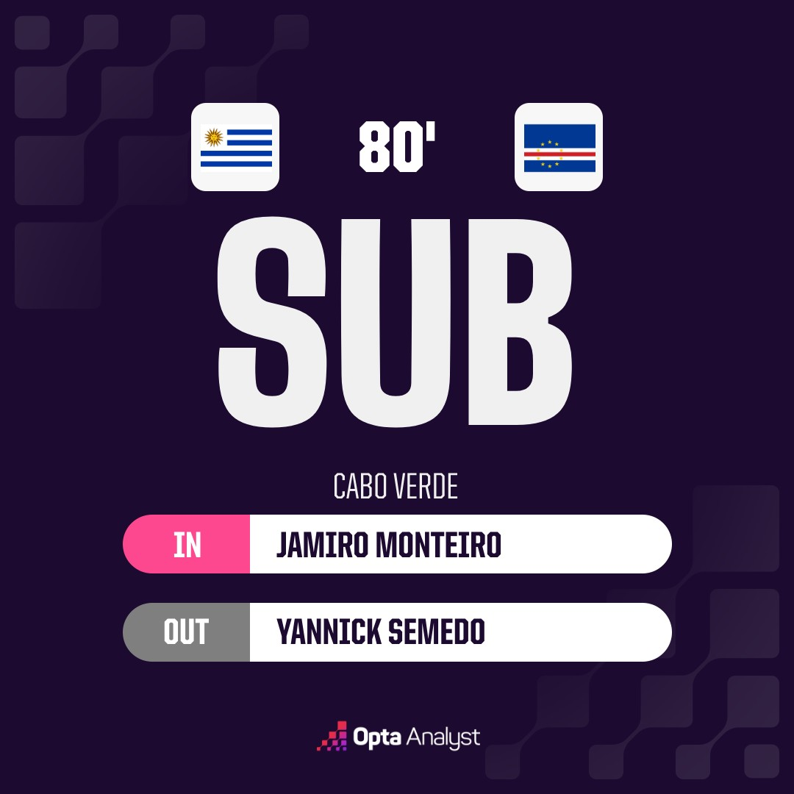
79'
A chance goes begging as Nicolás de la Cruz gets off a shot that does not hit the target. They might have done better with that one, but instead it is a goal-kick to Cabo Verde.
76'
In the last 15 minutes, it is Uruguay who have dominated the ball, having seen 73.68% of the possession, yet they have not been able to go and turn that into a goal just yet, with their opponents standing firm.
76'
Corner! Cabo Verde are pushing for a goal and now they have an opportunity from this set-piece.
76'
No luck! Pico Lopes takes on a shot that, had they got it right, might have been set to test the goalkeeper, but instead it is sent off target and Uruguay come away unscathed.
76'
With 15 minutes left to play, plus stoppage time, it is Uruguay who have had the better of the possession, with 66.92%. Cabo Verde, on the other hand, have had 33.08% of the ball so far.
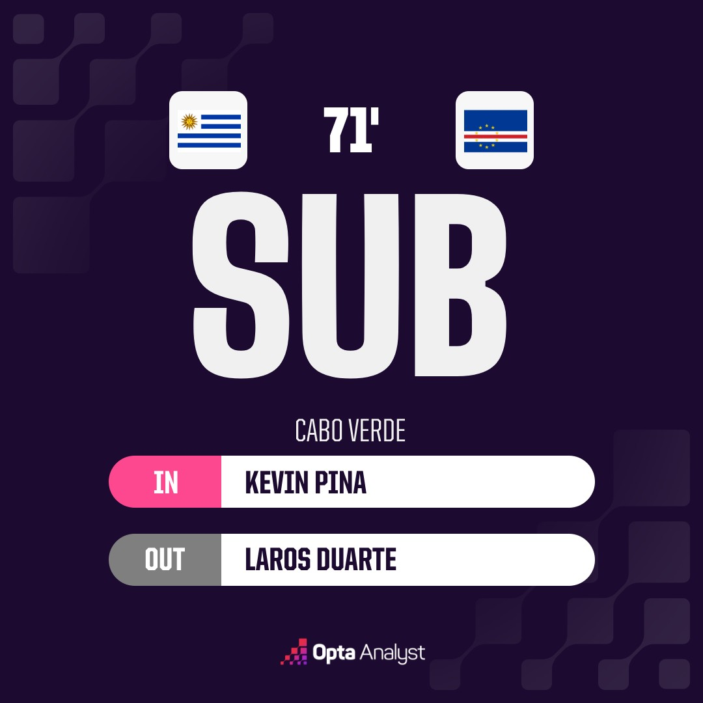
71'
An enforced substitution for Cabo Verde, as Kevin Pina cannot carry on after sustaining an injury. Laros Duarte has hastily warmed up and now made their way onto the pitch in Kevin Pina's place.
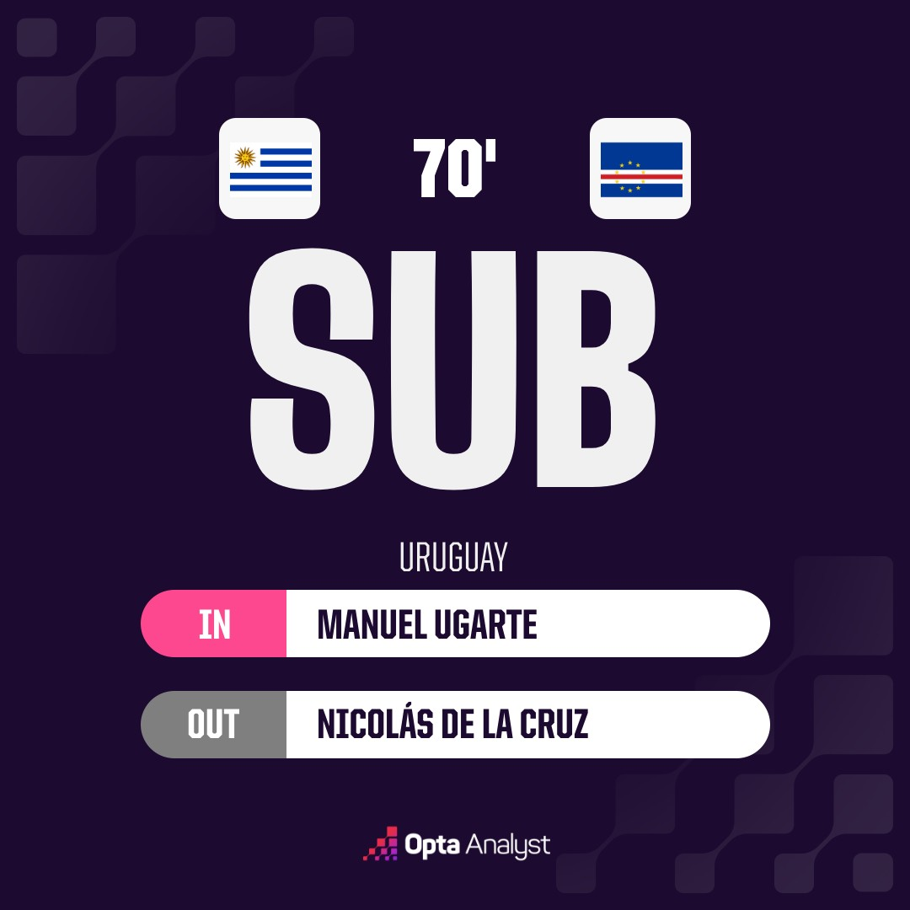
70'
Uruguay are making a tactical change. Manuel Ugarte is leaving the field and in their place comes Nicolás de la Cruz – we will soon see if this switch has the desired impact.
70'
Uruguay are making a tactical change. Federico Viñas is leaving the field and in their place comes Darwin Núñez – we will soon see if this switch has the desired impact.
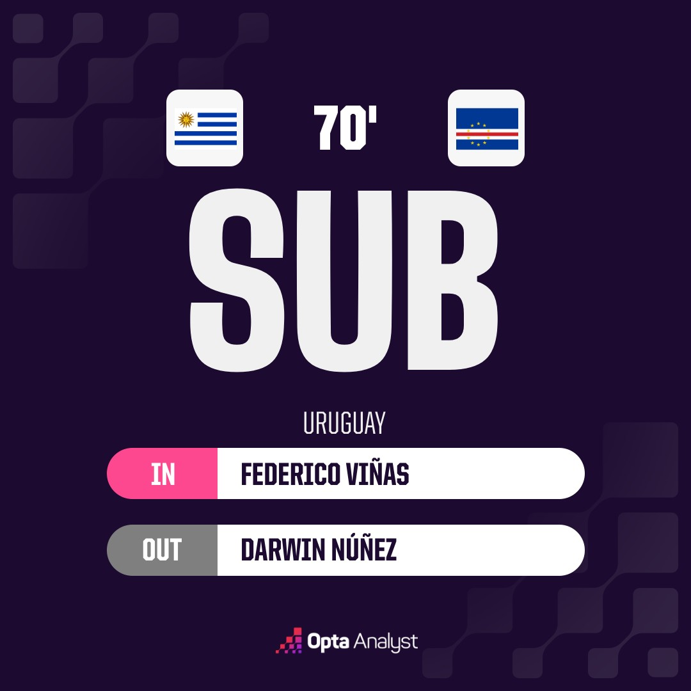
68'
Offside! Maxi Araújo thought they were through on goal, but the Cabo Verde defence stepped up in time to catch them offside, and the assistant referee puts their flag up.
67'
BLOCK! An intervention from Pico Lopes might have just prevented a goal, with the defending player getting in the way of an attempt from Federico Valverde. Solid defending there!
66'
With 25 minutes left to play, this game is about to go into its final quarter. So, that seems a good chance to check on the shot count. Cabo Verde have had 6 efforts, with 2 of those hitting the target. Uruguay, on the other hand, have had 11 shots, getting 2 of those attempts on target.
63'
That is a disappointing effort from Jamiro Monteiro, who went for glory but got their attempt wrong, and the shot sailed off target. A frustrating moment for Cabo Verde.
61'
Equaliser for Cabo Verde! A long-range strike from Hélio Varela has restored parity. Can either team push on and find a winner now, or will they have to settle for a share of the spoils?
61'
Hélio Varela has scored his first goal in the 2026 FIFA World Cup.
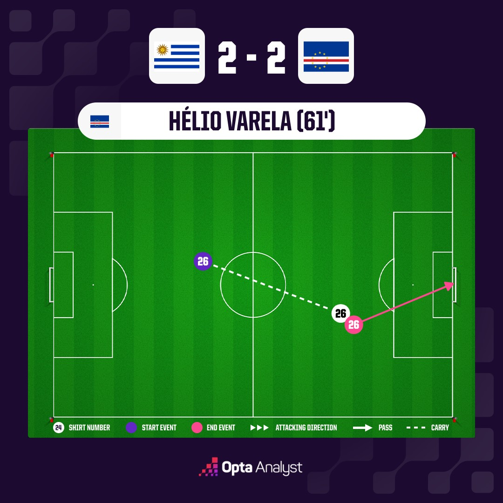
60'
A free-kick to Uruguay, as Deroy Duarte goes in and fouls Federico Viñas. However, Cabo Verde will not mind giving one away in this area too much, with plenty of distance to their goal.
59'
BLOCKED! That was close. Jamiro Monteiro got off a shot, which was heading in, but Federico Viñas was on hand to make a vital intervention. Great block!
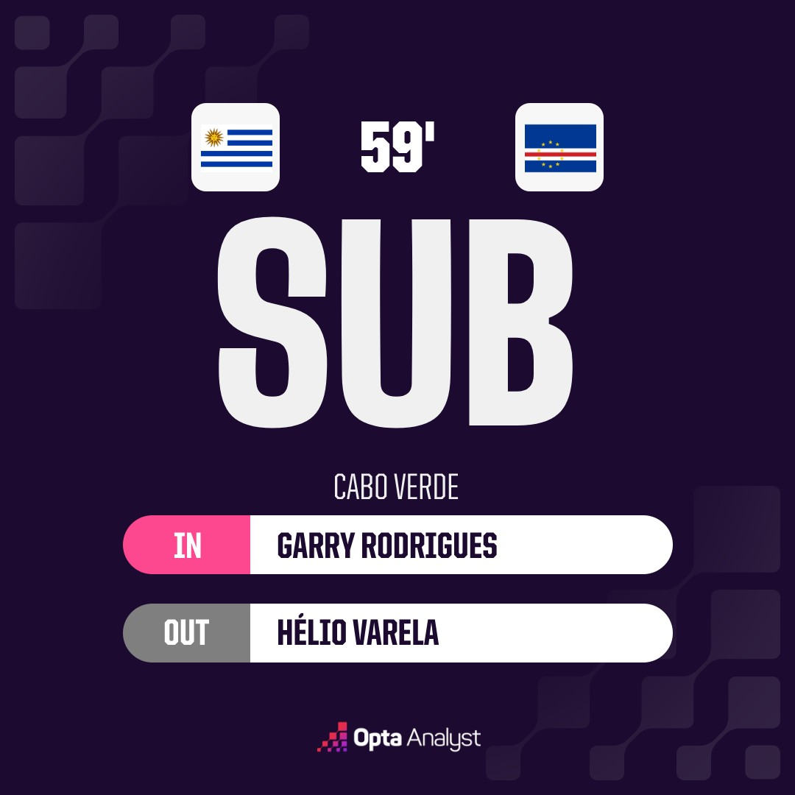
59'
A substitution for Cabo Verde sees Garry Rodrigues replaced by Hélio Varela. There does not appear to be any obvious sign of an injury, so that is a tactical switch.
58'
Gilson Benchimol’s match is over as Cabo Verde decide to make a substitution. Nuno da Costa enters the field in what looks like a tactical change.
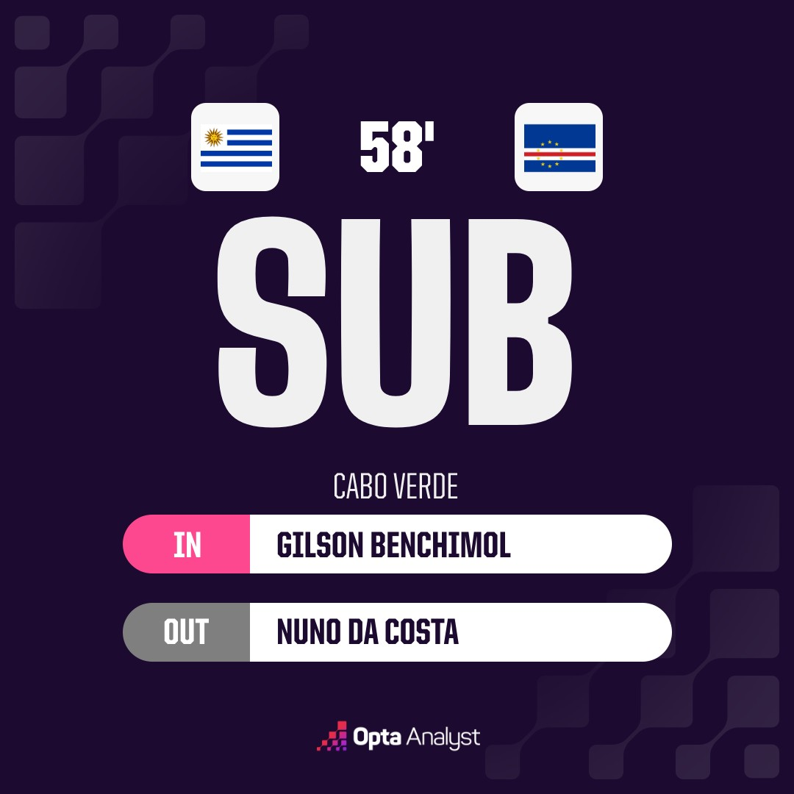
58'
A yellow card for Uruguay's Mathías Olivera. They will have to walk a tightrope for the rest of this match, and Cabo Verde will likely look to target them and draw a second bookable offence.
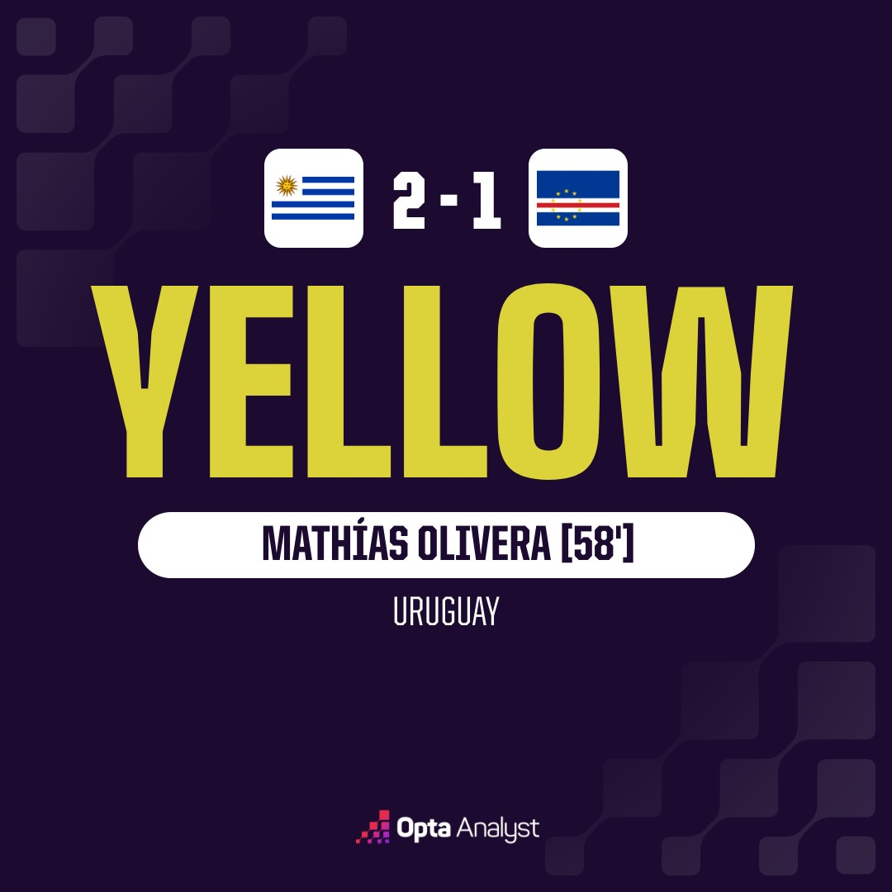
58'
A free-kick in a dangerous position now for Cabo Verde, after a foul from Mathías Olivera on Gilson Benchimol. Can Cabo Verde make Uruguay pay for that rashness from Mathías Olivera?
57'
Great defending from Uruguay, who are staying organised and winning key battles to preserve their lead.
55'
Textbook game management from Uruguay after the break. They're stroking the ball around with confidence, making Cabo Verde work for every touch while protecting that precious lead.
53'
Despite trailing, Cabo Verde are showing real defensive grit, digging in and stopping further damage as they try to build a platform.
52'
That is a disappointing effort from Sidny Cabral, who went for glory but got their attempt wrong, and the shot sailed off target. A frustrating moment for Cabo Verde.
51'
Maxi Araújo goes in on Sidny Cabral and concedes a foul. The free-kick is not in a particularly dangerous area from Uruguay’s viewpoint, though.
48'
Despite trailing, Cabo Verde are showing real defensive grit, digging in and stopping further damage as they try to build a platform.
46'
Substitution. Telmo Arcanjo has to make way, with Deroy Duarte coming on in their place following an injury. That is going to come as a blow for Cabo Verde. Can they overcome it?
55'
Uruguay are unbeaten in their last 5 FIFA World Cup matches when leading at half-time (W5, D0) dating back to 14th June 2014 against Costa Rica (L1-3).
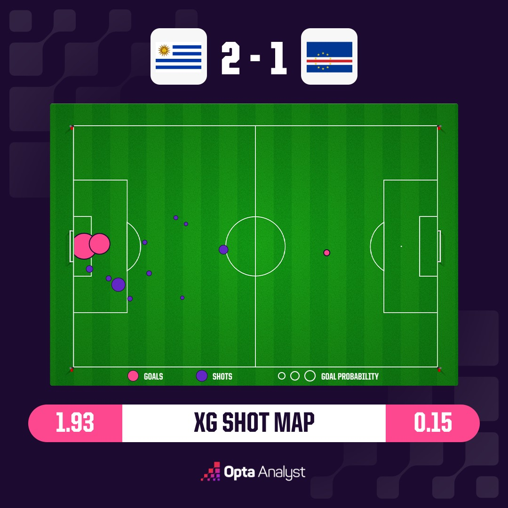
45+9'
The first half comes to a close and it’s Uruguay who have the lead over Cabo Verde at Miami Stadium, with the scoreline 2-1 at the interval. Will Cabo Verde turn this around after the break?
45+6'
Maxi Araújo has assisted his first goal in the 2026 FIFA World Cup.
45+6'
Agustín Canobbio has scored his first goal in the 2026 FIFA World Cup.
45+6'
GOAL! Uruguay are in the lead! Agustín Canobbio scores from inside the box to give his side the advantage in this match. Can Cabo Verde find a way back into this, or will Uruguay go on and win it now?
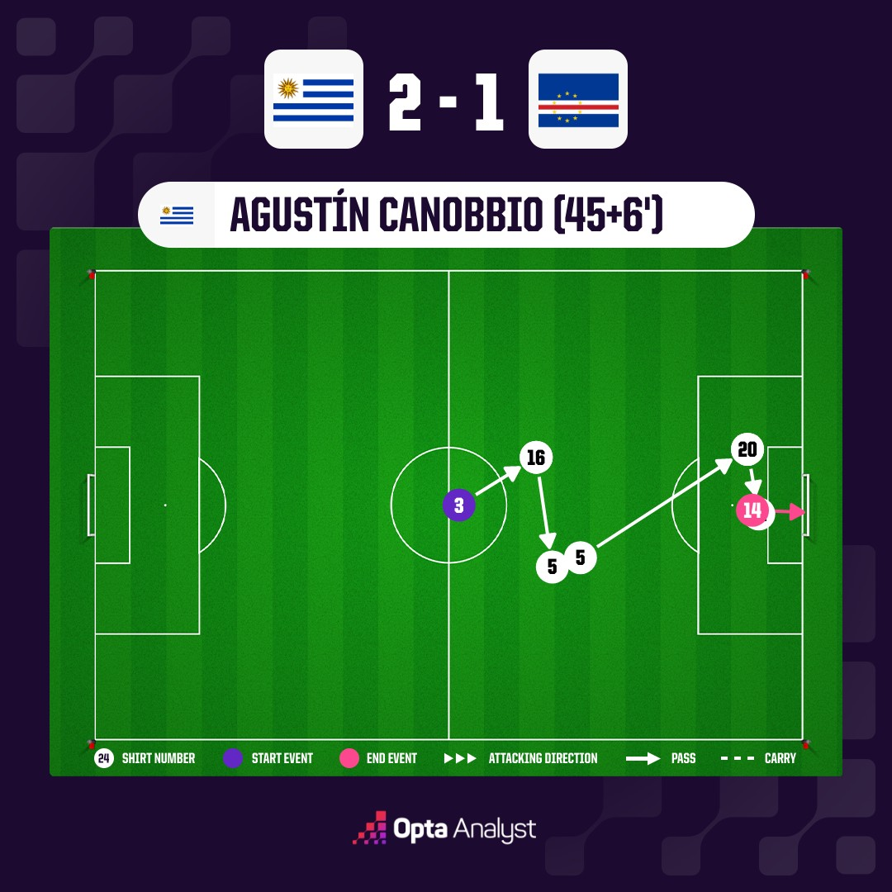
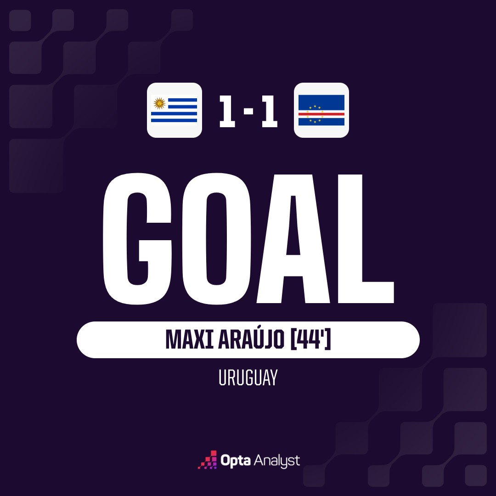
44'
Maxi Araújo has scored his second goal of the 2025 FIFA World Cup this edition, more than any other Uruguay player.
44'
GOAL! It isl level now, after Maxi Araújo’s finish from inside the penalty area. They found enough space to get a shot off, and now parity is restored. Can Uruguay take that momentum on and go and win it now?
43'
MISS! A shot from Diney Borges ends up being off target. They might have done a bit better with that one, but it remains Cabo Verde 1-0 Uruguay.
42'
Uruguay have attempted the last 7 shots in this game, Cabo Verde last shot was taken by Kevin Pina in the 21st minute.
42'
BLOCK! An intervention from Jamiro Monteiro might have just prevented a goal, with the defending player getting in the way of an attempt from Sebastián Cáceres. Solid defending there!
42'
Excellent defensive work from Cabo Verde; their organization and success in key duels are effectively safeguarding their lead.
41'
Uruguay have not had a shot on target so far in this game.
40'
MISS! A shot from Maxi Araújo ends up being off target. They might have done a bit better with that one, but it remains Uruguay 0-1 Cabo Verde.
36'
Uruguay are having plenty of the ball, with 70.71% possession in the last 15 minutes. However, they have been unable to transfer that possessional dominance into a goal during that period.
36'
A free-kick to Cabo Verde, as Agustín Canobbio goes in and fouls Sidny Cabral. However, Uruguay will not mind giving one away in this area too much, with plenty of distance to their goal.
34'
Federico Valverde has attempted 5 shots, his highest total in a single match in the FIFA World Cup.
34'
MISS! The score remains 0-1, with Cabo Verde relieved after Uruguay’s Federico Valverde goes for goal but sends their attempt off target. Not one to write home about, that one.
33'
MISS! A shot from Manuel Ugarte ends up being off target. They might have done a bit better with that one, but it remains Uruguay 0-1 Cabo Verde.
33'
Great defending from Cabo Verde, who are staying organised and winning key battles to preserve their lead.
31'
A free-kick to Cabo Verde, as Manuel Ugarte goes in and fouls Jamiro Monteiro. However, Uruguay will not mind giving one away in this area too much, with plenty of distance to their goal.
28'
No luck! Federico Valverde takes on a shot that, had they got it right, might have been set to test the goalkeeper, but instead it is sent off target and Cabo Verde come away unscathed.
24'
That might have been going in! A fantastic block from Pico Lopes, who gets in the way of a goal-bound effort from Federico Valverde. Would the goalkeeper have been beaten? We will never know.
24'
Cabo Verde have a corner to defend now after Telmo Arcanjo diverts an attempt from Federico Valverde out of play. Can Uruguay take this chance to get a good delivery in and really test their opponent’s defence?
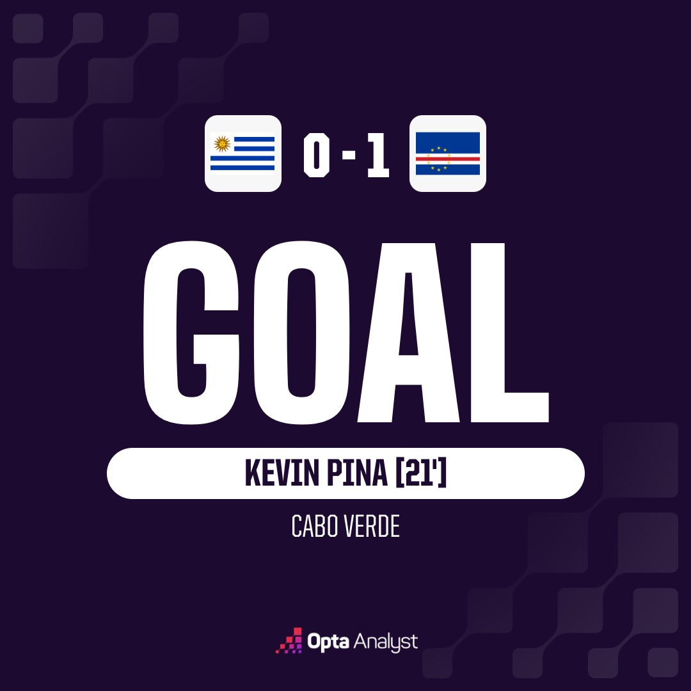
21'
Kevin Pina has scored his first goal in the 2026 FIFA World Cup.
21'
GOAL! An excellent strike from long range by Kevin Pina, who puts Cabo Verde in front as this entertaining contest continues! Uruguay will need to score again if they are to get anything from this one.
20'
Yellow card! Rodrigo Bentancur will have to be careful from now on after they are cautioned.
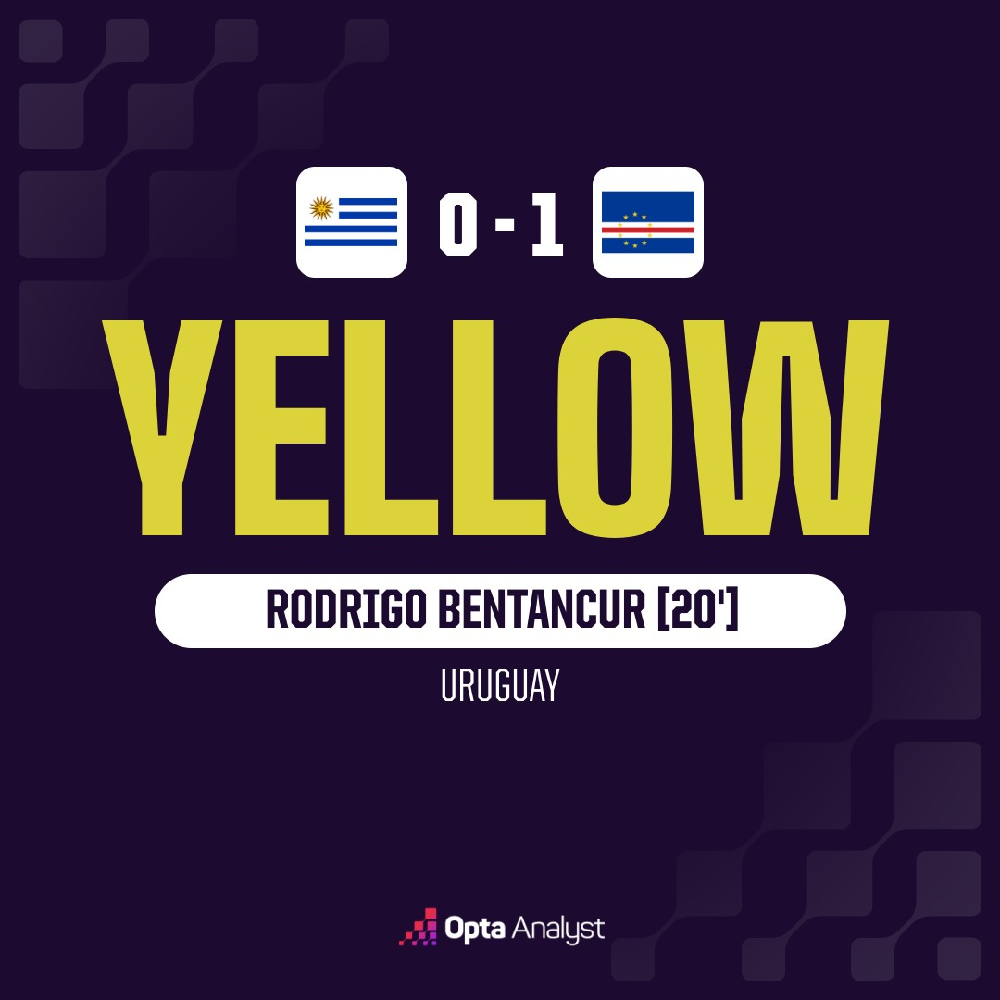
20'
Good play from Telmo Arcanjo, who draws a foul from Rodrigo Bentancur to hand Cabo Verde a free-kick in a dangerous position. Will they create something from this set-piece?
18'
Free-kick! A foul from Agustín Canobbio on Sidny Cabral. It is well away from Uruguay’s goal, so it is unlikely to result in a chance for Cabo Verde.
16'
Corner! The ball goes behind and now Uruguay will aim to deliver a good ball into the penalty area and test that Cabo Verde defence, which has been frustrating them in recent minutes.
16'
Uruguay have had plenty of the ball in the last 15 minutes, with 66.00% possession compared to just 34.00% for their opponents. However, there’s not been any goal to come from that possessional dominance just yet.
14'
A chance goes begging as Federico Valverde gets off a shot that does not hit the target. They might have done better with that one, but instead it is a goal-kick to Cabo Verde.
13'
A rash challenge from Kevin Pina, who sends Maxi Araújo tumbling, giving Uruguay a free-kick. It is not in a threatening position, but it gives them a chance to get back on the ball.
10'
No luck – it’s offside! Maxi Araújo looked to dart in behind and get on the end of a pass, yet they just went too early, and the flag is up to signal offside.
8'
The Cabo Verde defence steps up in time and there is a frustration for Federico Viñas, who thought they were through until the flag goes up to signal offside.
7'
It’s been tight so far, and Cabo Verde are making sure it stays that way with strong defensive discipline and well-timed clearances.
7'
Great block from Ryan Mendes, as they get in the way of an attempt from Rodrigo Bentancur that might have been set to cause the goalkeeper some problems. Solid defending from the Cabo Verde player.
5'
Yellow card! Sidny Cabral will have to be careful from now on after they are cautioned.
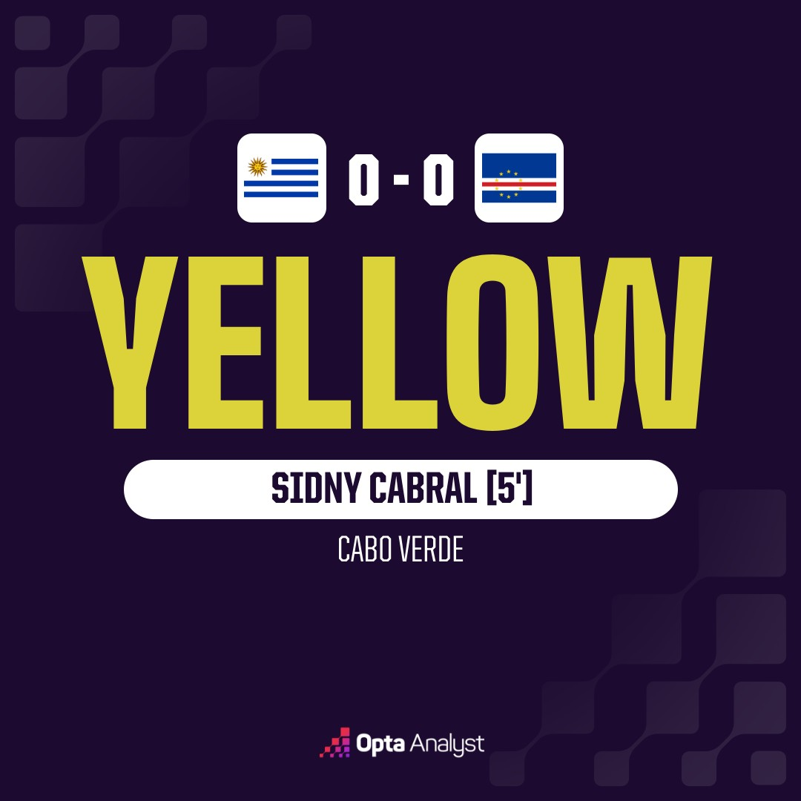
5'
A rash challenge from Sidny Cabral, who sends Rodrigo Bentancur tumbling, giving Uruguay a free-kick. It is not in a threatening position, but it gives them a chance to get back on the ball.
3'
A free-kick to Cabo Verde, as Rodrigo Bentancur goes in and fouls Sidny Cabral. However, Uruguay will not mind giving one away in this area too much, with plenty of distance to their goal.
2'
A rash challenge from Agustín Canobbio, who sends Sidny Cabral tumbling, giving Cabo Verde a free-kick. It is not in a threatening position, but it gives them a chance to get back on the ball.
1'
We are under way as Cabo Verde kick off at Miami Stadium. Let's hope an entertaining contest is in store.
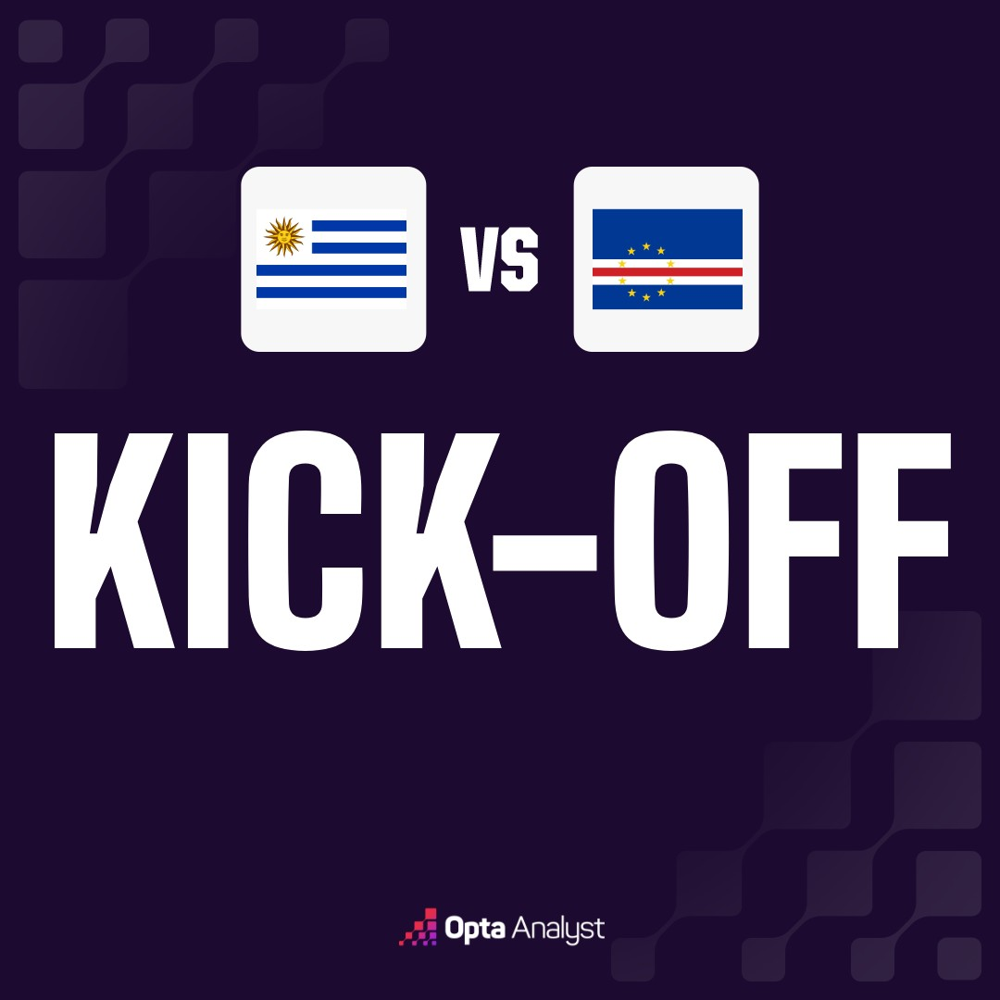
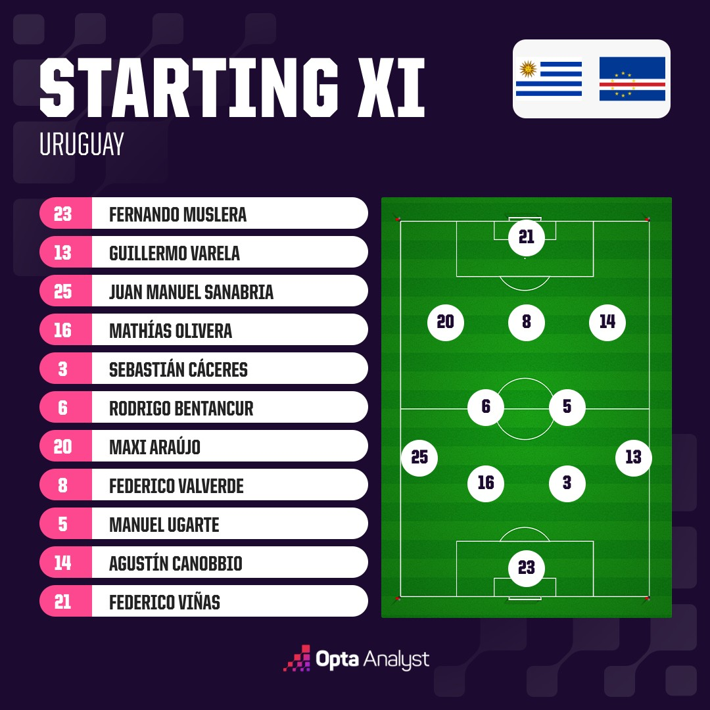
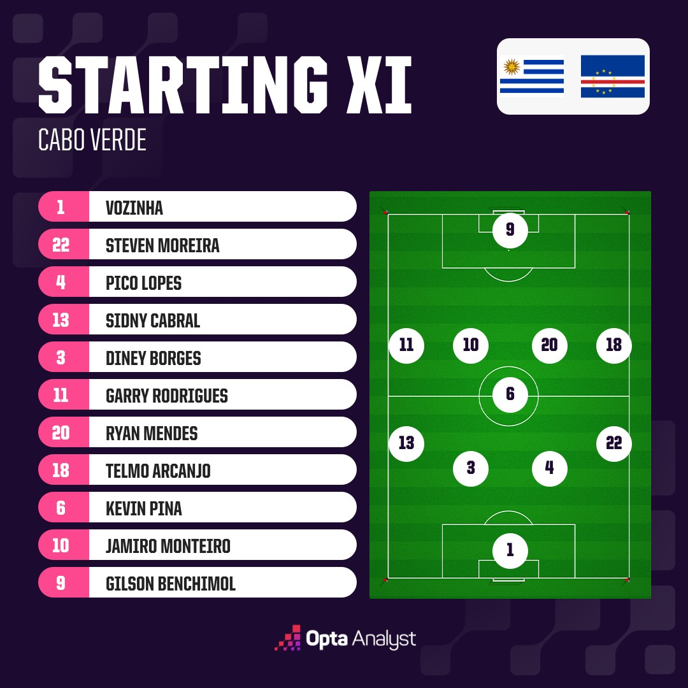
Fernando Muslera is making his 18th appearance in the FIFA World Cup.
Two teams looking for their first win in the FIFA World Cup group stage will clash at Miami Stadium on Sunday, as Uruguay take on Cabo Verde.
Uruguay played out a 1-1 draw in their opening World Cup group stage match against Saudi Arabia on June 15. Maxi Araújo was on the scoresheet in the draw. They are winless in their last five games in all competitions.
Cabo Verde played out a 0-0 draw against Spain in their opening World Cup game, a June 15 group stage clash at Atlanta Stadium, improving their unbeaten streak to four. In 2026, they have won three, drawn one, and lost one.
Uruguay and Cabo Verde are first and fourth in the group, respectively, level on one point. Elsewhere in the group, Saudi Arabia are sitting second on one point. Spain are third on one point.
Araújo has the early World Cup scoring lead for Uruguay after netting against Saudi Arabia. Cabo Verde are still looking for their first goal of this season's World Cup.
Cabo Verde have been difficult to score on recently, as they haven't allowed a goal in their last 311 minutes of play in all competitions. Finland were the last team to score on the Cabo Verde side, netting in a March friendly.
In their last six matches in all competitions, Uruguay have won one, drawn four and lost one. The Uruguayan side scored five and conceded eight over that stretch, scoring first in one of the six contests. They had one first-half goal, while their opponents netted five times in the first 45 minutes. The Cabo Verde side have won three, drawn one and lost two in their last six. The Cabo Verde side scored 10 and conceded six over that stretch, netting first in three of the six. They had five goals in the first half, while their opponents netted two times before the break.
-
General
Possession 65.2% 65.18634.81434.8% Possession lost in defensive half 20 205050 Possession lost in middle third 50 504444 Duels 103 103103103 Duels success rate 45.6% 45.63153.39853.4% Aerial duels 36 363636 Aerial duels won 55.6% 55.55644.44444.4% Successful dribbles 7 71212 Fouls won 4 41111 Offsides 3 300 Corner awarded 11 1144 -
Distribution
Passes 511 511278278 Long passes 48 486161 Long passes proportion (%) 9.4% 9.39321.94221.9% Passing accuracy 82.2% 82.19273.74173.7% Passes in opponents' half 386 386125125 Passing accuracy in opponents' half (%) 82.1% 82.12457.657.6% Total passes in the final third 197 1974545 Passing accuracy in final third (%) 72.1% 72.08146.66746.7% Forward passes 326 326180180 Forward passes (%) 63.8% 63.79664.74864.7% Through balls 1 111 Final third entries 74 743131 Penalty area entries 51 511515 Total open play crosses 19 1933 Crosses 29 2977 Crossing accuracy 13.8% 13.79328.57128.6% -
Attack
Goals 2 222 Shots 17 171212 Shots on target 2 244 Blocked shots 7 744 Headed shots 4 411 Shots outside the box 8 81010 Shots inside the box 9 922 Shots accuracy excluding blocked shots 20.0% 205050.0% Shooting accuracy 11.8% 11.76533.33333.3% Key Passes 12 1266 -
Defence
Tackles 16 161616 Tackles success rate 50.0% 5093.7593.8% Clearances 11 114848 Interceptions 7 71313 Recoveries 44 444343 Attacking third recovery 6 622 Defensive third recovery 21 213232 Midfield third recovery 17 1799 Recoveries in attacking half (%) 13.6% 13.6364.6514.7% -
Discipline
Fouls conceded 11 1144 Yellow cards 2 222 Red cards 0 000